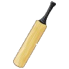

<nav class="navbar navbar-toggleable-md navbar-inverse bg-primary">
	<button class="navbar-toggler navbar-toggler-right" type="button" data-toggle="collapse" data-target="#navbarSupportedContent"
		aria-controls="navbarSupportedContent" aria-expanded="false" aria-label="Toggle navigation">
    <span class="navbar-toggler-icon"></span>
  </button>
	<a *ngIf="!auth.authenticated" class="navbar-brand" [routerLink]="['/']">
		 {{title}}
	</a>
	<a *ngIf="auth.authenticated" class="navbar-brand" [routerLink]="['/home']">
		 {{title}}
	</a>
	<div class="collapse navbar-collapse" id="navbarSupportedContent">
		<ul *ngIf="auth.authenticated" class="navbar-nav mr-auto">
			<li class="nav-item" [routerLinkActive]="['active']"><a class="nav-link" [routerLink]="['/myteam']">My Team</a></li>
			<li class="nav-item" [routerLinkActive]="['active']"><a class="nav-link" [routerLink]="['/players']">Players</a></li>
			<li class="nav-item" [routerLinkActive]="['active']"><a class="nav-link" [routerLink]="['/matches']">Matches</a></li>
		</ul>
		<ul *ngIf="auth.authenticated" class="navbar-nav">
			<li class="nav-item">
				<a class="nav-link navbar-user">
					<span *ngIf="!auth.photo">{{ auth.email }}</span>
					<a href="/" class="logout-button"><i (click)="auth.signOut()" class="fa fa-sign-out fa-lg" aria-hidden="true"></i></a>
					
				</a>
			</li>
		</ul>
		<ul *ngIf="!auth.authenticated" class="navbar-nav ml-auto">
			<li class="nav-item">
				<a class="nav-link">
					<button [routerLink]="['/signin']" type="button" class="btn btn-secondary btn-sm">
						Login
						<i class="fa fa-sign-in fa-lg" aria-hidden="true"></i>
					</button>
				</a>
			</li>
		</ul>
	</div>
</nav>

<div class="page-content container-fluid">
	<router-outlet></router-outlet>
</div>
